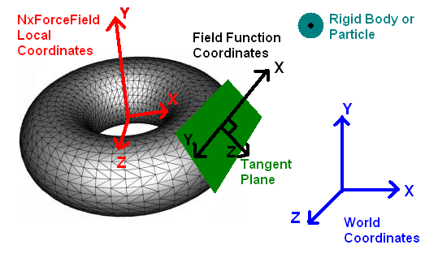

Force Field - Coordinate Systems
The force field does support different kinds of coordinate systems to help creating various effects
with the linear kernel and to simplify custom kernel code. The force field class transforms the position
and velocity of intersecting objects (rigid body, fluid, cloth, softbody) into the selected coordinate
system and the force field's local frame. Those two variables are then passed to the
force field kernel function as input parameters.
The variables are provided in the local, "tangential" coordinate system of the force field at the
position of the object. For the coordinate type NX_FFC_CARTESIAN this is equivalent to the force field's own frame; for the
other types the local axes shift depending on position:
- NX_FFC_SPHERICAL: The X axis is directed outwards from the center of the sphere; the Y and Z axes are the tangents
of the spherical surface. The y and z components of the p and v vectors in the function are always 0,
and target position/velocity in these directions is ignored.
- NX_FFC_CYLINDRICAL: The X axis is directed outwards from the cylinder axis. The Y axis is the cylinder axis, and
the Z axis is the cylindrical surface tangent (directed to make XYZ a right-handed system). The z component of the
p vector in the function is always 0, and the target position in this direction is ignored.
- NX_FFC_TOROIDAL: The X axis is directed outwards from the closest point on the torus' equator; the Y axis
is the tangent of the equator at its closest point (directed in the clockwise direction as seen from the direction
of the torus' axis), and the Z axis is normal to both forming a right-handed system XYZ. See the figure below. The
y and z components of the p vector in the function are always 0 and the target position in these directions
is ignored. Note that this coordinate system is only available for linear kernels!
Please note that there are potential singularities in the force function, at the axis of a
cylinder or torus. You may wish to exclude these singularities from the force field, possibly using exclusion shapes.
Here is an illustration of the local coordinates for a toroidal force field:

The resultant force, f, is also in the local frame, with one exception: The constant part actually works in the global
frame.
API Reference
Copyright © 2008 NVIDIA Corporation, 2701 San Tomas Expressway, Santa Clara, CA 95050 U.S.A. All rights reserved. www.nvidia.com